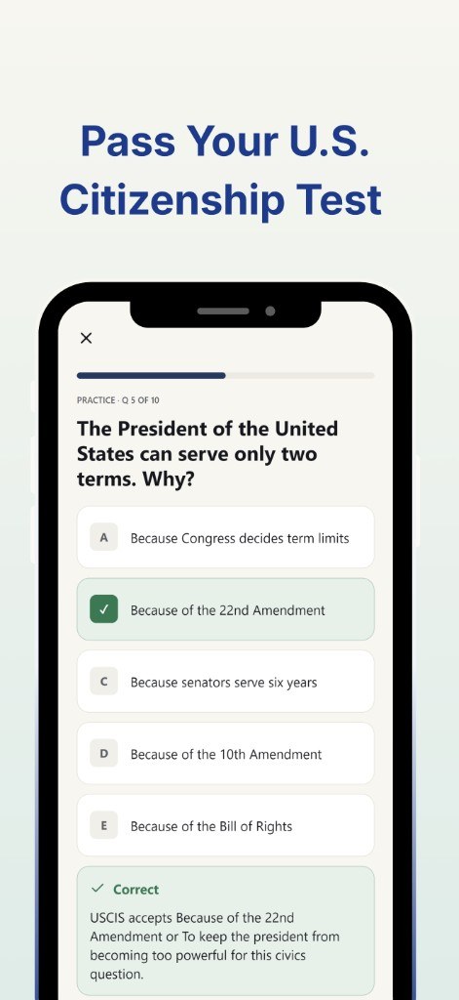
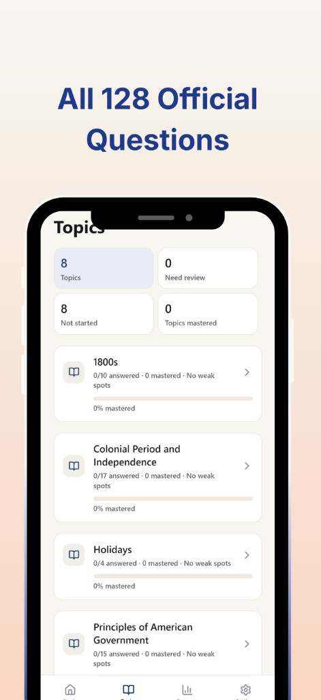
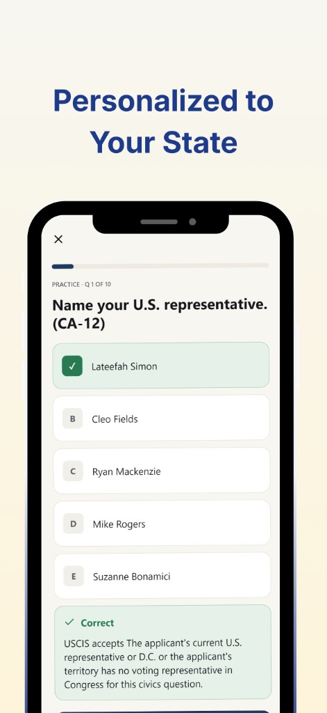
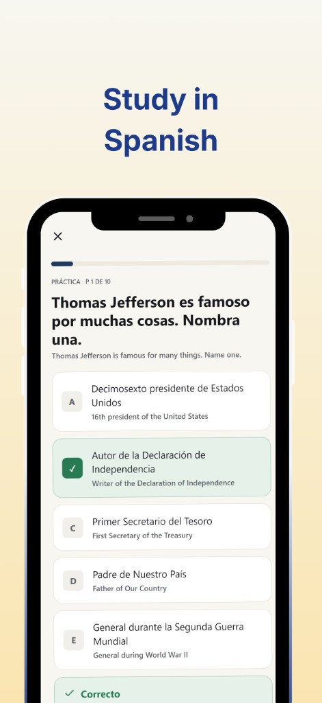
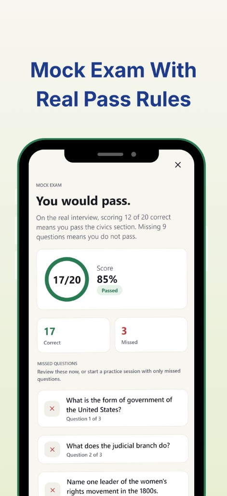
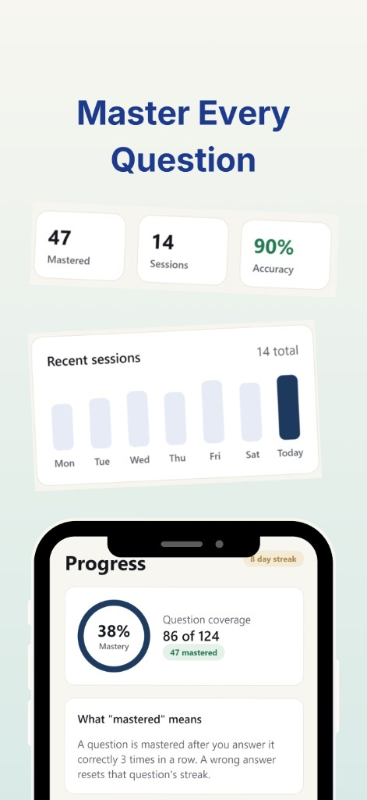

Pass Your U.S. Citizenship Test
Practice with clear, exam-style questions based on the official USCIS civics test. Build confidence one question at a time with instant feedback and plain-English explanations.
Study official civics questions, review missed answers, practice in Spanish, and prepare with mock exams that follow real pass rules.


Practice with clear, exam-style questions based on the official USCIS civics test. Build confidence one question at a time with instant feedback and plain-English explanations.

Study the full 2025 USCIS civics question bank in organized topics. Track what you have answered, what still needs work, and which topics you are ready to move past.

Get practice questions that reflect your state, district, or territory. Elevix Apps helps you study current civics answers like your U.S. representative, governor, senators, and capital.

Learn in Spanish while still seeing the official English test wording. Spanish study mode
helps you understand each question and answer without losing sight of what may be asked in the interview.
*This feature requires an in-app purchase.

Take a realistic mock exam using USCIS-style scoring. See whether you would pass, review missed questions, and focus your next practice session on the areas that need attention.

Track your progress over time with mastery, accuracy, and session history. A question is mastered after repeated correct answers, so your progress reflects real retention, not just one lucky guess.
Yes. The app is free to download and may offer an optional in-app purchase for additional features like Spanish study mode.
Yes. The app includes the full official USCIS civics question bank, organized into topics so you can track what you have answered and what still needs work.
Yes. Spanish study mode lets you learn in Spanish while still seeing the official English test wording. This feature requires an in-app purchase.
Yes. Practice questions reflect your state, district, or territory, including your current U.S. representative, governor, senators, and capital.
No. USCIS Citizenship Test Prep is published by an independent company, Elevix Apps, and is not affiliated with USCIS or the U.S. government.
If you purchased the app, studied with it, and did not pass the civics portion of your interview, you can contact support with proof of purchase and your test result. Eligible pass guarantee requests are reviewed within 7 business days.
The app is currently available on iOS, with Android support planned.